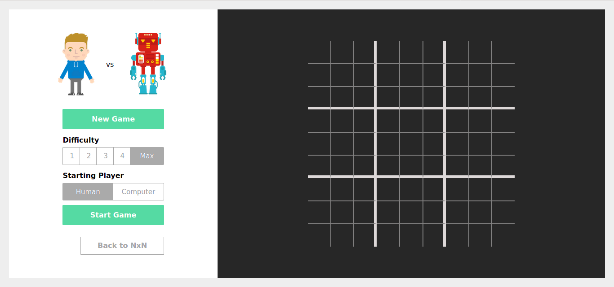
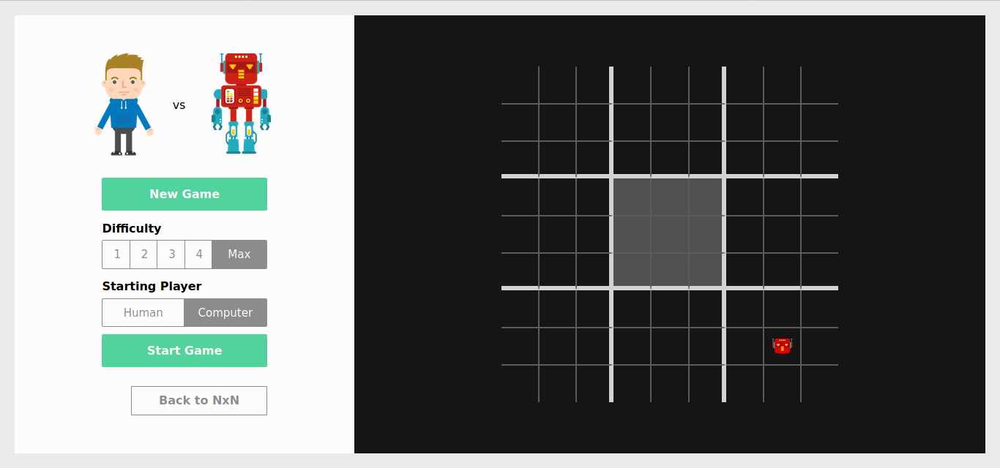
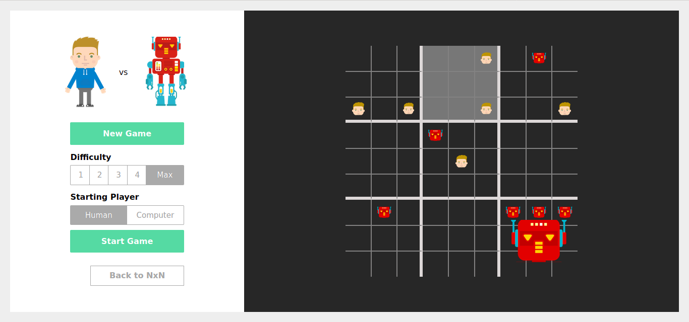
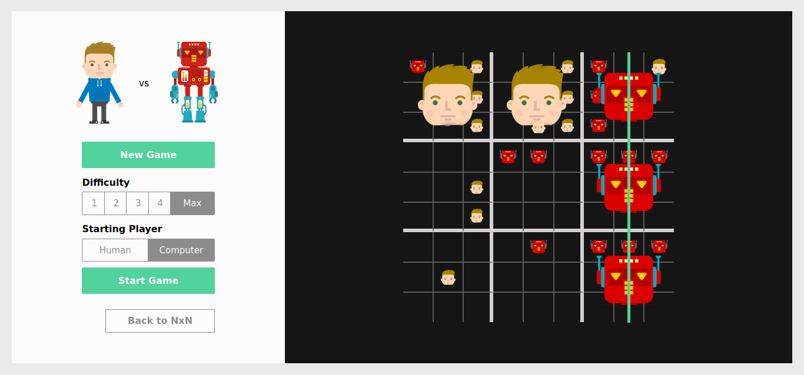

RULES FOR ULTIMATE TIC-TAC-TOE
Each small 3 × 3 tic-tac-toe board is referred to as a local board, and the larger 3 × 3 board is referred to as the global board.
The game starts with the first player selecting any of the 81 empty spots. This move "sends" their opponent to its relative location. For example, if the first move was played in the top right square of the local board, then the next move needs to be played in the local board at the top right of the global board.
The next player can play in any one of the nine available spots in that local board, each move sending the first player to a different local board.
If a move is played so that it is to win a local board by the rules of normal tic-tac-toe, then the entire local board is marked as a victory for the player in the global board.
Once a local board is won by a player or it is filled completely, no more moves may be played in that board.
If a player is sent to such a board, then that player will have to play in the next available board.
Game play ends when either a player wins the global board or there are no legal moves remaining, in which case the game is a draw.
